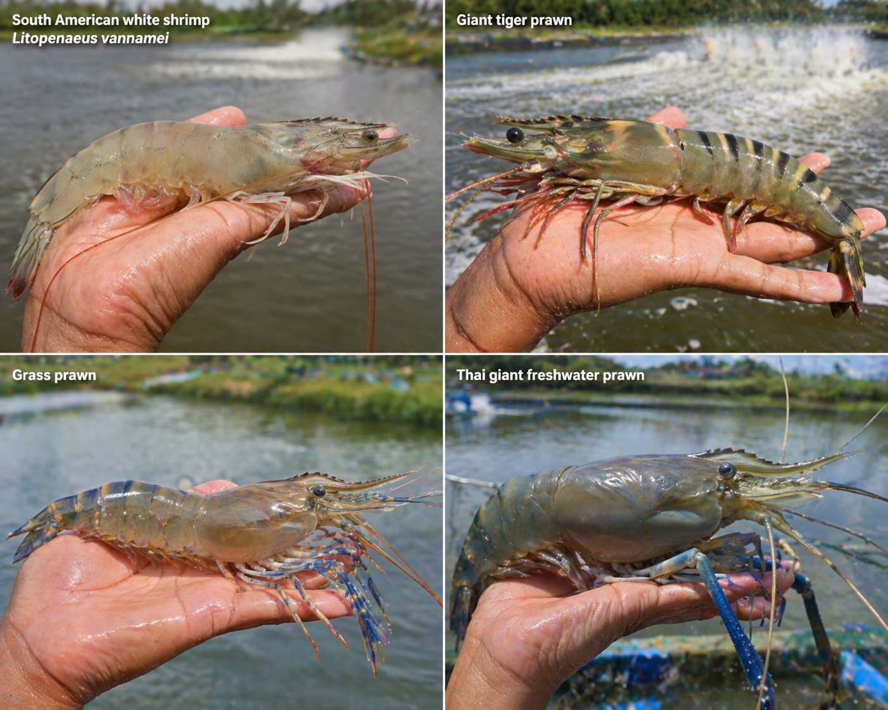
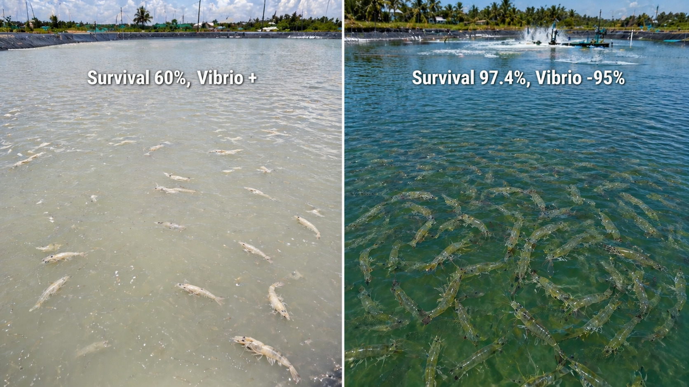

投苗后10-35天死亡率可达100%。广东、海南、越南、泰国无一幸免，2010-2016年累计损失超440亿美元。"养虾靠运气"成为行业写照。
即使没有EMS爆发，弧菌长期慢性感染也让虾场头疼——FCR从1.1涨到1.4，存活率从70%掉到55%，出虾规格不均匀，低价处理。
2024年全球白对虾产量突破650万吨，虾价承压，饲料占成本50-60%。低存活率+高FCR的"双杀"让很多虾场已在亏损边缘。
活力旺®，从分子层面强化对虾免疫与消化效率，系统性解决存活率与FCR的双重痛点。

※ 数据来自：①ResearchGate 2026；②PMID:38481478；③水生生物学报2025 & FSI 2025；④MDPI 2023；⑤活力旺®同场同密度对照试验。建议设立对照组验证实际效果。

活力得®枯草菌源蛋白酶强化蛋白质水解为小肽与氨基酸，饲料利用率提升49.3%，运营成本↓20.2%（PMID:38481478）。
→ 好料没有吸收就是浪费。活力得®帮虾把贵的饲料真正消化，FCR从1.32直接降到1.12，每造省下的料钱比添加成本高10倍。
上调免疫相关基因（Hsp70、LGBP等），副溶血弧菌感染存活率43%→76.7%，TCBS弧菌菌落数减少95%。
→ 弧菌是虾场的头号杀手。活力得®让虾的免疫防线更强，感染弧菌后存活率从43%救到77%，TCBS板上弧菌少95%。
激活Nrf2/KEAP1通路，SOD活性↑33%，肠道绒毛高度与密度提升；抗氧化能力为VE的500倍，存活率可达97.4%。
→ 应激（高密度/换水/天气）是虾场隐性杀手。活力得®让虾更抗压、肠道更健康，存活率97.4%是分子层级的全面保护。


| 品种/模式 | 主产区 | 基准存活率 | 基准FCR | 活力旺方案后 | 主要痛点 |
|---|---|---|---|---|---|
| 南美白对虾（土塘） | 广东/广西/海南/福建/山东/越南 | 58-62% | 1.28-1.35 | 存活率↑14-16%，FCR↓0.17-0.19 | 弧菌/EMS/高密度应激 |
| 南美白对虾（小棚） | 广东/浙江/福建 | 62-71% | 1.15-1.28 | 存活率↑14-16%，FCR↓0.18 | 氨氮高/应激/弧菌 |
| 南美白对虾（生物絮团RAS） | 规模场/东南亚工厂化 | 71-80% | 1.10-1.20 | 存活率↑14%，FCR↓0.19 | 水质管理/能耗 |
| 泰国虾（罗氏沼虾） | 广东/广西/越南/泰国 | 60-70% | 1.5-1.8 | 存活率显著提升，FCR改善 | 弧菌感染/规格不均 |
| 斑节对虾（草虾） | 海南/越南/泰国/印尼 | 50-65% | 1.6-2.0 | 免疫提升，存活率改善 | 白斑病/弧菌 |
| 养殖模式 | 对照组 存活率/FCR | 活力旺组 存活率/FCR | 改善幅度 | 收益提升 |
|---|---|---|---|---|
| 传统土塘 | 58% / 1.35 | 72% / 1.18 | ↑14% / ↓0.17 | 显著提升 |
| 小棚 | 62% / 1.28 | 78% / 1.10 | ↑16% / ↓0.18 | 显著提升 |
| 生物絮团 | 71% / 1.15 | 85% / 0.96 | ↑14% / ↓0.19 | 显著提升 |
※ 存活率数据来自台湾/华南12场实证（1,200万尾）及ResearchGate 2026文献。建议设立同场对照组验证。以上数据不含EMS急性爆发期。
规模：1口虾塘（3-5亩），投苗当天开始添加，对照相邻塘不添加，30天比较：弧菌数（TCBS）、死虾数量、虾体色泽与活力。建议高密度塘（>50尾/㎡）优先验证。
规模：扩大至3-5口塘，观察至收虾（80-90天），记录存活率、FCR、出虾规格均匀度，计算对照塘vs添加塘每亩纯利润差异。
规模：全场虾塘，结合水质管理优化（益生菌水调+活力旺®料添），建立「低弧菌-高存活-优FCR」养殖体系，符合中国无抗水产养殖政策。
※ 田间试验参考值，实际收益因管理条件而异。
立即諮询活力旺®代理商
※ 活力旺®代理商提供完整试验记录表单，含TCBS弧菌检测、存活率记录、FCR计算表
※ 存活率97.4%数据来自ResearchGate 2026；FCR改善数据来自PMID:38481478；弧菌存活率及SOD数据来自水生生物学报2025及FSI 2025。
※ 实际效果因养殖品种、密度、水质、季节、饲料配方而异。
※ 建议设立同场同密度对照塘验证效益，EMS急性爆发期需配合其他管理措施。
※ 投入产出比为参考值，不构成任何投资建议。